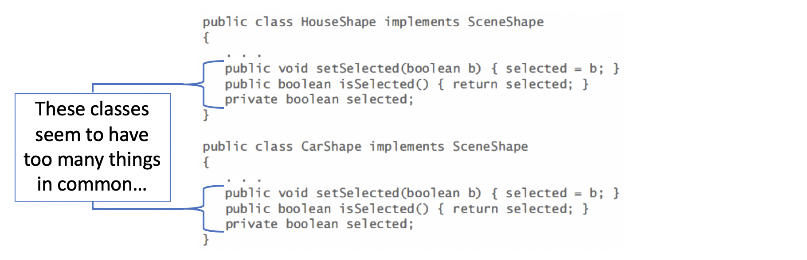
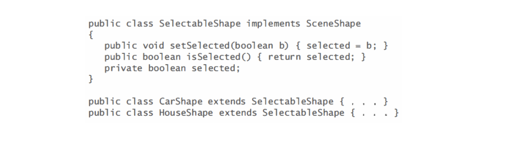
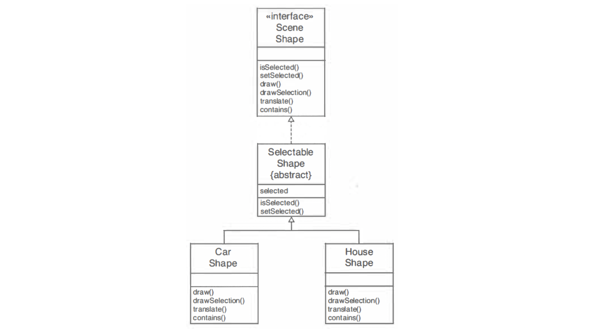
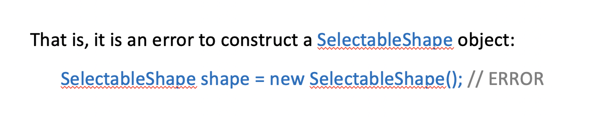

2. Abstract Class
- assume the interface type:
We'll then define classes CarShape and HouseShape that implement this interface type
Because every shape needs to keep a selection flag, the naive approach would be to supply the selection flag separately in each class:

Clearly, it is a better idea to design a class that expresses this commonality
We will call this class SelectableShape


However, there is a problem with the
SelectableShapeclass. It does not define all of the methods of theSceneShapeinterface type.Four methods are left undefined in this class
void draw(Graphics2D g2)
void drawSelection(Graphics2D g2)
void translate(double dx , double dy)
boolean contains(Point2D aPoint)
We say that these methods are undefined or abstract in the
SelectableShapeclassIt is the job of further subclasses to define them
For that reason, the
SelectableShapeclass must be tagged asabstract:
public abstract class SelectableShape implements SceneShape {
}
The
HouseShapeandCarShapeclasses areconcrete subclassesthat define the remaining methodsAbstract classesare convenient placeholders for factoring out common behaviorThey behave exactly the same as any other classes, with a single exception: You cannot instantiate an abstract class

However, having variables whose type is an abstract class is legal
Naturally, they must contain a reference to an object of a concrete subclass (or null):
SelectableShape shape = new HouseShape(); // OK
An
abstract classis somewhere between aninterface typeand aconcrete classAbstract classescan have instance fields and methods:- You always want to move as much
common functionalityas possible into the superclass, whether or not it is abstract. - For example, the
SelectableShapeclass is an abstract class. But that doesn't mean it can't have fields or methods.
- You always want to move as much
Abstract classes have an advantage over interface types: they can define common behavior
But they also have a severe disadvantage: A class can only extend one abstract class, but it can implement several different interface types
- For that reason, we have both a `SceneShape` interface type and a `SelectableShape` classThe
SelectableShapeis a service for classes that wish to implement theSceneShapeinterface typeThe Java library has a number of "interface type/abstract class" pairs, such as:
Collection/AbstractCollection
ListModel/AbstractListModel
It would be a good idea to follow that
naming conventionand rename theSelectableShapeclass intoAbstractShape